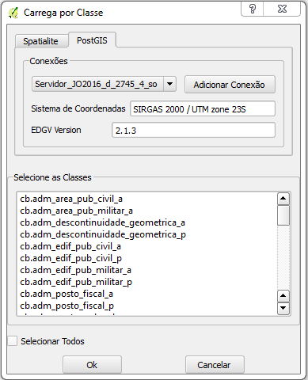

A funcionalidade de carregamento por classe permite que uma única classe ou conjunto de classes sejam carregadas. As classes podem pertencer a diferentes categorias. A imagem abaixo mostra o diálogo de carregamento.

O uso desta funcionalidade se inicia com a seleção de uma conexão com um banco de dados previamente criado. Novas conexões podem ser criadas diretamente neste diálogo (Adicionar Conexão). Todas as classes presentes no banco são listadas no campo Selecione as Classes. Tendo sido selecionadas as classes desejadas basta clicar em OK e o carregamento será efetuado.